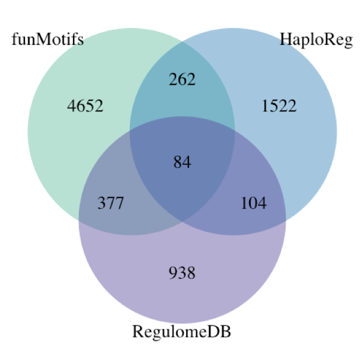
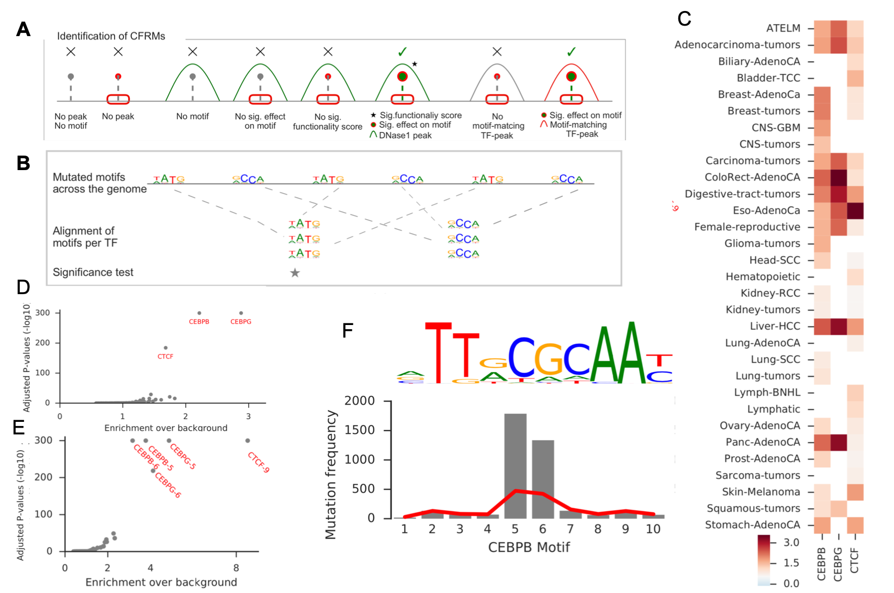
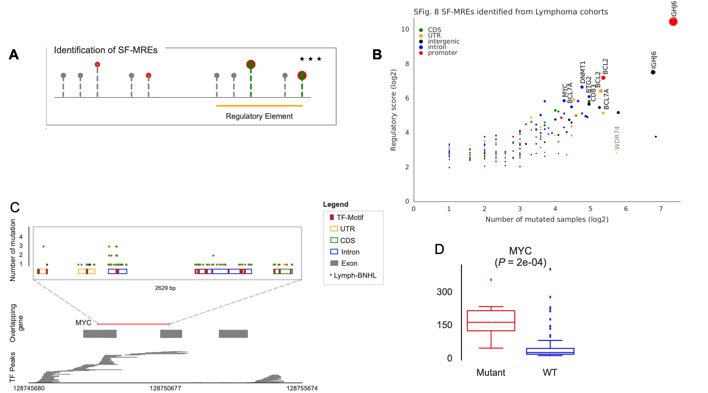

Computational methods for understanding complex human diseases
Half-time presentation
Karolina Smolinska-Garbulowska
supervisor: Jan Komorowski
Upppsala, 2019-12-09
Introduction
Uncovering explainability for the complex health-related problems is a crucial task.
Large number of available data complicates the process of discovery the most informative features for the biological outcomes.
We focused on developing methodologies that support the disease discovery process and as a result two tools were implemented.
The main aim of my projects was to improve the methods and apply them to large-scale experiments performed on complex diseases, e.g. cancer and autism.

Rule-network (RN) construction
Interdependencies are discovered from transparent classifiers, such as rule-based classifiers (RBCs).

The conjuncts are co-predictive of the decision.
Nodes - conjuncts in rules, i.e. features with their values occurring in the rules.
Edge - connects two nodes if the corresponding conjuncts occur in the same rule.
RNs are built for each decision (outcome class).
VisuNet

- RN visualization tool implemented as an R package,
- helps identifying the strongest features and their interdependencies,
- easy to use due to an interactive interface,
- applicable for any RBC,
- publicly available on GitHub: https://github.com/komorowskilab/VisuNet

Applications
|
Dataset
|
Data type
|
#objects
|
Decision
|
Models
|
#features
|
Rule-based model quality
|
|
Autism (MG)1
|
gene expression levels
|
146 patients: 82 autistic and 64 healthy boys
|
Autism vs Control
|
|
35
|
80%
|
|
SIV (FB&ZK)2
|
22 Rhesus macaques: 10 infected in less than 4 challenges (Early) and 12 infected in more than 6 challenges (Late) with SIV after vaccination
|
Early vs Late
|
W0
|
597
|
95%
|
|
W16
|
1068
|
100%
|
|
W32
|
723
|
100%
|
|
C1
|
448
|
95%
|
|
ULSAM (KD)3
|
metabolite levels
|
963 patients: 134 type 2 diabetes (T2D) and 829 non-diabetes (ND)
|
ND vs T2D
|
|
19
|
67%
|
|
Synthetic data (KS)4
|
synthetically correlated variables
|
500 objects: 250 D1 and 250 D2
|
D1 vs D2
|
100 models
|
25
|
48% - 100%
|
|
Note:
|
|
Data sorce
|
|
1 Alter, M.D., et al., 2011
|
|
2 Barrenäs, F., et al., 2019
|
|
3
|
|
4 Garbulowski, M., et al., 2019
|
MG - Mateusz Garbulowski
FB&ZK - Fredrik Barrenäs & Zeeshan Khaliq
KD - Klev Diamanti
KS - Karolina Smolinska
Case-control studies of autism - sample RN
Case-control studies of autism - sample RN

4 genes were previously reported in the SFARI Gene database of autism associations: COX2, TMLHE, NCKAP5L and TSPOAP1.
Several genes identified in the literature as autism associated: ZSCAN18, SCIN, NCS1, CAPS2, ZFP36L2.
MAP7 and COX2 interdependency in autism
The strongest interdependency is visible between COX2 and MAP7.
COX2 regulates anxiety behaviour in the mouse model (Wong, C.T., et al., 2019)
MAP7 is required for axon growth and branch formation during embryonic brain formation. The association of MAP7 with autism and schizophrenia was previously reported (Tymanskyj, S.R., et al., 2017)
RN may suggest a link between embryonic development events and anxiety behaviour.
Project 1 - Summary
- VisuNet is conceptually simple, but useful for interpreting RBCs,
- RN identifies different combinations of features and their levels that are co-predictors,
- RN helps explain the differences between the decision classes,
- autism-control RN confirms genes associations with autism,
- RN may help to discover the interaction mechanisms for attributes, e.g. MAP7 and CAPS2.
The manuscript is planned to finish by the end of this year.
Project 2: funMotifs and the functional annotation of the tissue-specific noncoding mutations
The gene expression is regulated by transcription factors (TFs) through binding to TF biding sites (motifs).
To understand how the genes are regulated, we need to know what determinated functionality of TF motifs.
We incorporated data from large-scale genomics platforms including ENCODE, RoadMap Epigenomics and FANTOM to characterize the tissue-specific functional TF motifs.
As a consequence, funMotifs was developed by Husen M. Umer. I was mainly working on the framework applications.
Two manuscripts were written based on the Project 2.
Manuscript 1

funMotifs framework
funMotifs content:
- Annotations for motifs of ~500 TFs in 15 tissues
- Annotations:
- TF peak,
- DNase1 site,
- Chromatin state,
- Replication domain,
- …
Definition of candidate functional regulatory mutations (CFRMs):
In the tissue(s) relevant for the variant.
- Overlap a TF motif and change entropy by at least |0.3|,
- TF expression > 0,
- DNaseI peak,
- Functionality score > 2.5 or TF-peak.
Applications
- SNPs and short indels from 1000 Genome project (HU & KS)
- eQTL SNPs from the GTEx data portal v7 (HU & KS)
- SNPs from GWAS Catalogue and SNPs in LD with GWAS SNPs for r>0.8 (KS)
HS - Husen M. Umer
KS - Karolina Smolinska
Comparison to existing annotation databases
2,219,330 eQTL SNPs were annotated using funMotifs, RegulomeDB and HaploReg.
|
|
funMotifs
|
RegulomeDB
|
HaploReg
|
|
Genome wide
|
No
|
Yes
|
Yes
|
|
Functionality score
|
Yes
|
Yes
|
No
|
|
Functional annotations
|
Yes
|
Yes
|
Yes
|
|
Tissue Specificity
|
Yes
|
No
|
No
|

RegulomeDB: Boyle,A.P., et al. (2012)
HaploReg: Ward,L.D., et al. (2016)
Overview of the candidate functional GWAS SNP rs8103622 in breast tissue

Manuscript 2

The aim of the study
Functional annotation of mutations in the Pan Cancer Analysis of Whole Genomes consortium data for 2,500 cancer genomes in 37 cancer types.
Results
Using the funMotifs framework we identified 121,029 CFRMs overlapped 217,075 potentially functional motifs across the 44 cohorts. Many CFRMs were found in genes that were previously linked with cancer.
Overview of mutations

CEBPB - the most significantly mutated motifs

The active motifs of CEBPB are significantly less methylated genome-wide than inactive motifs and still there is an abundance of mutations at this site (P-value < 1e-50).
Highly recurrent mutated regulatory elements

Project 2 - Summary
- Characterization of the noncoding regions of human genome is important to understand mechanisms that lead to complex diseases,
- Functional annotations help to identify regulatory mutations that may significantly dysregulate gene expression in cancer and other complex diseases,
- funMotifs applications identified potential functional variants in cancer and normal genomes,
- Experimental validation may be performed on the CFRMs to confirm our findings
funMotifs was implemented as a command-line pipeline (https://github.com/komorowskilab/funMotifs) and a web-based interface: http://bioinf.icm.uu.se/funmotifs.
Future plans
Project 1. - implement the possibility to annotate the RN attributes using biological properties of the input datatypes and various databases, e.g. GO terms for a gene expression data.
Project 2. - modification of the funMotifs algorithm to improve identification of the false positive regulatory motifs. We are planning to continue research on the functional annotation of motifs. We would like to extend the functional motifs definition in terms of the conservation of the individual nucleotides in TF motifs across various diseases.
Project 3. - identification and visualization of interdependent genes that discern patients in the case-control studies of autism spectrum disorders by combining multiple rule-based classifiers.
Project 4. - identification of potential biomarkers that discern glioma subtypes using CFRMs from the COSMIC-available mutations for gliomas. Intersection of CFRMs with the differentially expressed genes based on the TCGA and GTEx databases.
Publications:
Husen M. Umer, Karolina Smolinska-Garbulowska, Nour-al-dain Marzouka, Zeeshan Khaliq, Claes Wadelius, Jan Komorowski, funMotifs: Tissue-specific transcription factor motifs, 2019, bioRxiv 683722; doi: https://doi.org/10.1101/683722 (subbmited)
Husen M. Umer, Karolina Smolinska-Garbulowska, Jan Komorowski, Claes Wadelius, Functional annotation of noncoding mutations in cancer, 2019(manuscript)
Marco Cavalli, Nicholas Baltzer, Gang Pan, José Ramón Bárcenas Walls, Karolina Smolinska Garbulowska, Chanchal Kumar, Stanko Skrtic, Jan Komorowski, and Claes Wadelius. Studies of liver tissue identifies functional gene regulatory elements associated to gene expression, type 2 diabetes and other metabolic diseases, Human genomics 13, no. 1 (2019): 20
Mateusz Garbulowski, Klev Diamanti, Karolina Smolinska-Garbulowska, Patricia Stoll, Susanne Bornelöv, Aleksander Øhrn, Jan Komorowski, (2019), R.ROSETTA: a package for analysis of rule-based classification models, bioRxiv 625905; doi: https://doi.org/10.1101/625905 These authors contributed equally to the work as second authors.
Posters:
- Michal J. Dabrowski, Michal Draminski, Klev Diamanti, Mateusz Garbulowski, Karolina Smolinska, Jacek Koronacki, Jan Komorowski. Identification of the boundary between common and ancestry-dependent levels of gene expression of Homo sapiens adaptive immune system. Systems Biology: Networks, Cold Spring Harbor Laboratory, Cold Spring Harbor, USA 14-18 March 2017.
- Mateusz Garbulowski, Karolina Smolinska, Klev Diamanti, Patricia Stoll, Zeeshan Khaliq, Sara Younes, Behrooz Torabi, Susanne Bornelöv, Jan Komorowski. RROSETTA: a toolkit for creating rough set models. Swedish Bioinformatics Workshop 2017, Uppsala, Sweden, 13-14 November 2017.
- Mateusz Garbulowski, Karolina Smolinska, Klev Diamanti, Patricia Stoll, Zeeshan Khaliq, Sara Younes, Behrooz Torabi, Susanne Bornelöv, Jan Komorowski. RROSETTA: a toolkit for creating rough set models. Swedish Epigenetics and Chromatin Meeting, EpiChrom 2017, Uppsala, Sweden, 30 November - 1 December 2017.
- Karolina Smolinska-Garbulowska, Steven O. O. Anyango, Jan Komorowski, VisuNet: an interactive tool for rule network visualization of rule-based models, SciLifeLab Science Summit 2019, Artificial Intelligence for Life Sciences, Uppsala, May 15, 2019
Presentation:
- Karolina Smolinska-Garbulowska, VisuNet: an interactive tool for rule network visualization of rule-based models, the awarded Flash Talk, SciLifeLab Science Summit 2019, Artificial Intelligence for Life Sciences, Uppsala, May 15, 2019
Acknowledgements
Jan Komorowski Laboratory
Claes Wadelius Laboratory
Manfred Grabherr